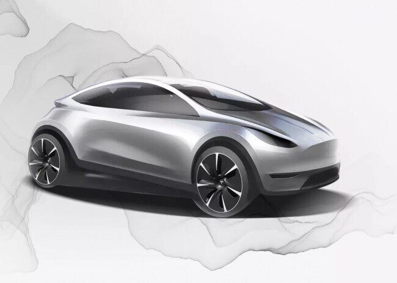

Tesla ha presentado su primer camión eléctrico, el Tesla Semi, que ofrece una autonomía de 800 kilómetros y una velocidad máxima de 105 km/h. Según Tesla, el Tesla Semi es más seguro, más eficiente y más económico que los camiones diésel convencionales.
